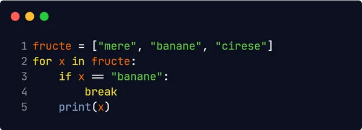

O buclă for este utilizată pentru iterarea unei secvențe (adică o listă, un tuplu, un
dicționar, un set sau un șir).
Cu buclă for puteți executa un set de instrucțiuni, o dată pentru fiecare element dintr-o
listă, tuplu,
set etc.
Bucla for nu are nevoie de o variabilă de indexare pentru a seta în prealabil.
Cu instrucțiunea break puteți opri bucla înainte ca aceasta să parcurgă toate elementele:
sau
Cu instrucțiunea continue puteți opri iterația curentă a buclei și puteți continua cu
următoarea:
Pentru a parcurge un set de cod de un anumit număr de ori, puteți folosi funcția range().
Funcția range() returnează o secvență de numere, începând de la 0 în mod implicit și crește
cu 1 (în mod implicit) și se termină cu un număr specificat.
Retineți că în intervalul range(6) nu sunt valori de la 0 la 6, ci valori de la 0 la 5.
Cuvântul cheie else dintr-o buclă for mentionează un bloc de cod care trebuie
executat la încheierea buclei:
O buclă imbricată este o buclă din interiorul unei bucle.
"Bucla interioară" va fi executată o dată pentru fiecare iterație a "buclei exterioare":
Buclele for nu pot fi goale, dar dacă, dintr-un anumit motiv, aveți o bucla for
fără conținut, introduceți instructiunea pass pentru a evita să primiți o eroare.